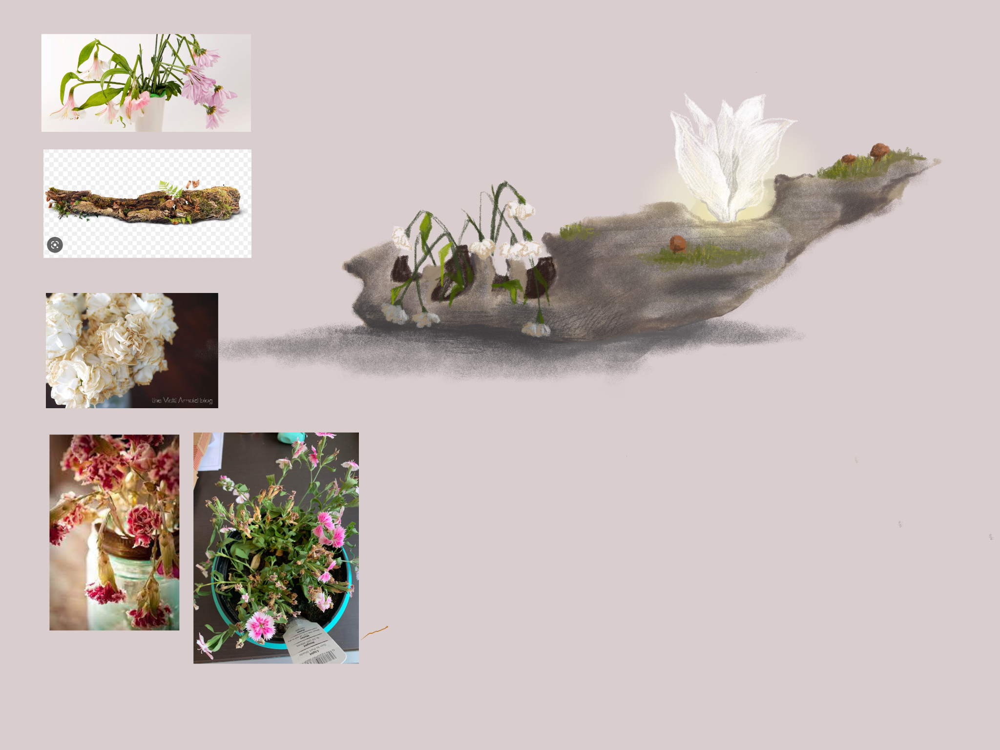
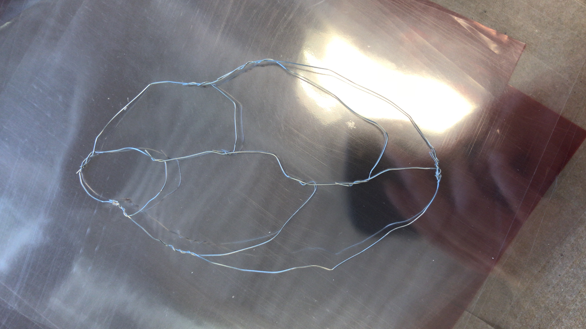
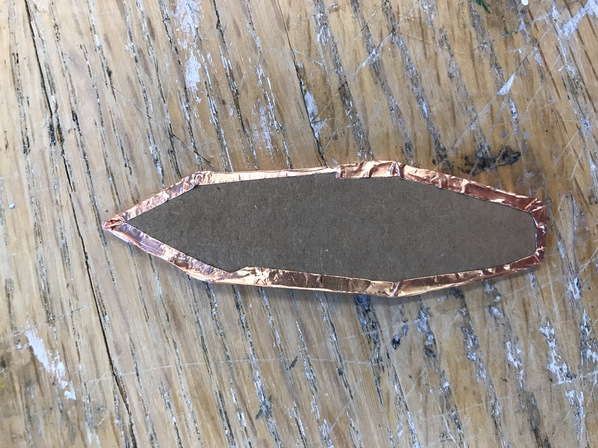
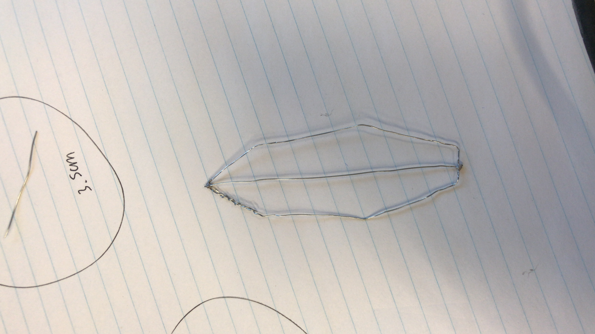
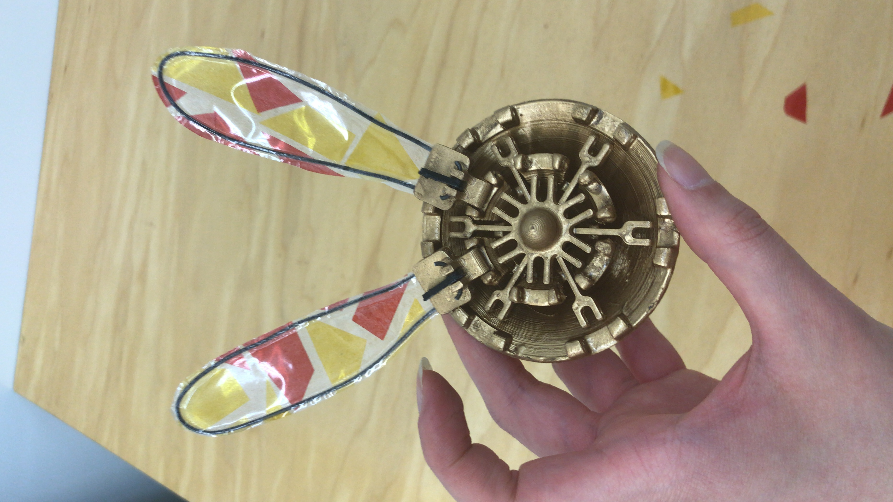
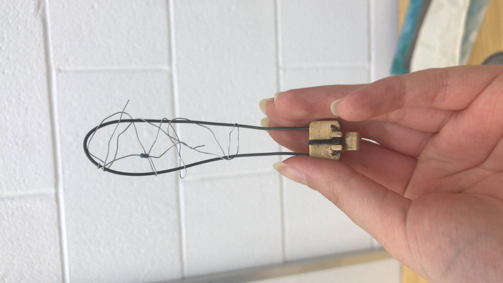
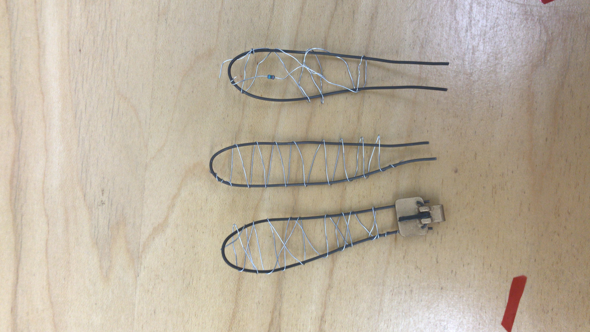

Timeline
6 weeks
Team
Kaaru Selvarasa
Samantha Tu
Class
GENE 499
Multi-media sculpture – Acrylic paint, Aluminum foil, DIY modeling paste, Paper clay, Glue, Tape, Mechanics wire, Metal wire, Resistors, Capacitors, PLA, Arduino Uno R3, Ultrasonic sensor, Servo motor, LED strip, Moss, Tulip, Gerbera.
Dimensions –16 1/4” x 22” x 9”
Thriving is a multimedia tech-art sculpture that invites the user to explore the intricate inner mechanisms of a man-made, 3-D printed robotic flower as it blooms. The flower was assembled by hand, piece-by-piece, over the course of several days. The flower shares the same home as the very real decay around it. The piece explores themes of nature and technology and is a depiction of advancement and sacrifices.
My primary contributions include leading the hardware and Arduino programming of the project. I also explored options whilst designing the petals of our flower.

Why did I attempt this – The first few petals were formed with an aluminum wire. Aluminum was chosen because it was wiry and delicate. To make the production process more consistent, I created a cardboard template as seen in the second image.
Why didn't this work – Even with the cardboard template, results were inconsistent. Consistency and symmetry was a requirement because the lines were designed to be rigid and inorganic. Additionally, the wire was coated such that soldering ends together was impossible.



Why did I attempt this – The next petals were pieced together with cellophane and spray adhesive in an attempt to create a stained glass effect. This choice was attempted because stained glass windows are typically intricate, man-made pieces of art that are highly technical and historically time-consuming to produce.
Why didn't this work – With the cellophane we purchased, this option did not provide the desired effect. Additionally, the petals appeared flat, and lacked dimension.

Final solution – The final solution used a frame of mechanics wire interwoven with aluminum wire and various electronics parts. Aesthetically, this solution allowed us to connect the organic and inorganic parts of our sculpture as a whole, and invited the user to inspect the piece more carefully.


Our team adopted a pattern of complementary collaboration. Every team member had a different set of skills and we each led a different part of the project. Although our work was sometimes siloed, this pattern of collaboration naturally worked best because we were constrained by timelines. We supported each other as necessary and teamed up on different aspects as required.
Although we all agreed on a concept, it was just as important to ensure we had a clear team vision on our desired effect. Concepts are very broad and subjective – how we want our users to emotionally react to our piece has a significant affect on the aesthetics of it. It turned out each of us had a different interpretation of our concept. This resulted in conflict when we made decisions later on because we weren't emotionally aligned. I learned that it's important to communicate the desired emotions effectively and perhaps use a universal language such as sketching to convey our desired effect as concretely as possible.